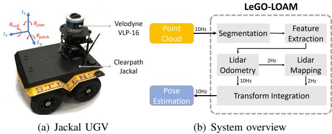
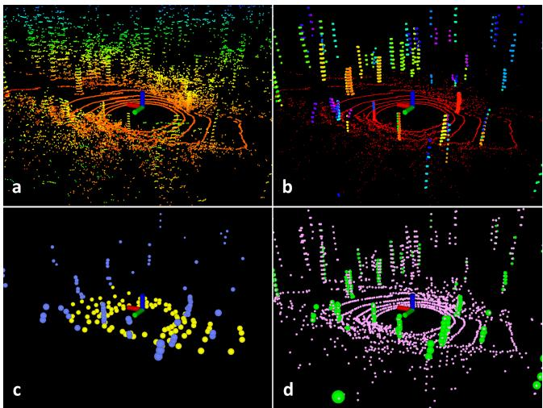
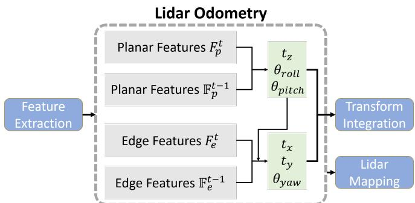
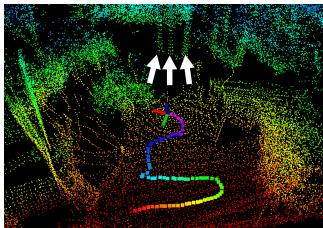

阶段 D · 激光主干 / Lesson 0075
LeGO-LOAM（2018）：为嵌入式瘦身
同一套骨架，砍掉一半算力，还顺手治好了「草地噪声」🌿
🎯 主题：点云分割 · 地面约束三自由度 · 两步 LM
👥 作者：Tixiao Shan、Brendan Englot
📅 2018 · LeGO-LOAM: Lightweight and Ground-Optimized Lidar Odometry and Mapping on Variable Terrain
本节目标
读完你应该能：说清 LeGO-LOAM 相对 LOAM 改了三处什么；并能解释一个很反直觉的结论——为什么地面点只能约束六个自由度里的三个 。
和前面课程怎么接
上一节 0074 讲了 LOAM 的骨架。这一节是它的第一个「改良版」——骨架不动，换里面的零件。它同时接第一季 0006 课的「特征法 + 退化」与 0009 课的越野场景。
1. LOAM 在地面车上为什么不够用
上一节我们把 LOAM 夸了一通。但那是在 KITTI 那种城市道路 上——路是平的、两侧有建筑、有清晰的人造特征。
现在把同一套东西搬到一台越野地面机器人 （UGV）上，场景换成草丛、树林、土路。原文列出了三个具体问题：
问题一：算力跟不上
嵌入式平台（比如 Jetson TX2）的算力远不如笔记本。而 LOAM 要逐点 算曲率、逐点判特征——原文实测，原版 LOAM 在 Jetson 上「提取特征」和「里程计」两步各要 超过 100 ms ，大量帧被直接跳过，根本跑不到实时 。
问题二：草和树叶在骗人
雷达装得低，紧贴地面。草丛与树叶会给出大量高曲率的点 ——因为每一片叶子都很小、很散，看起来就像「边缘」。但这些点在下一帧就完全不一样了（叶子在动、风在吹），根本不可靠。
问题三：两帧重叠少
越野机器人速度快、地形起伏大，相邻两帧点云重叠的部分变少，找对应更难。
LeGO-LOAM 的改进可以概括成一句话：骨架一点没动，但加了三道「过滤器」 ——先按可分割性筛一遍，再按「地面/非地面」分两路优化，最后按结构分两步求解。三个改动都指向同一个目标：用更少的点、更少的计算，做出更稳的结果。

原图注（Fig. 1）： Hardware and system overview of LeGO-LOAM.怎么看这张图： ① 先数一下它有几个模块——原文分成 Segmentation（分割）→ Feature Extraction（特征提取）→ Lidar Odometry（里程计）→ Lidar Mapping（建图）→ Transform Integration（位姿融合） 五块；② 和上一节 LOAM 的结构图比一比，最前面多出来的那个「Segmentation」就是本节的第一个改动 ；③ 注意右边还画了硬件（小车上装 VLP-16），这篇论文的实验平台就是它。
2. 第一招：先分割，再提特征
既然草和树叶会给出大量假特征，最直接的办法就是：在提特征之前，先把那些「不可靠的点」找出来扔掉。
但怎么判断一个点「不可靠」？LeGO-LOAM 的想法很巧妙：它不看单个点，而是看「一小片连在一起的点」有多大。
具体做法是：把一帧点云按同一根扫描线、相邻角度 组织成一张「距离图像」（range image，可以理解成「把环形扫描展开成一张长方形照片，每个像素存的是距离」），然后在这张图上做两步：
挑出地面 ——相邻扫描线之间，如果某个点与它的「垂直邻居」之间的夹角很小，说明这里是平坦的地面。把地面之外的点聚类 ——地面点去掉之后，剩下的点在图像上会连成一团团。对每一团数点数 ：如果这一团少于 30 个点 ，就直接整团丢掉。
为什么「小于 30 个点就丢」能滤掉草和树叶？因为草叶、树叶都是零散的、小块的 ——它们构成的簇很小；而树干、墙、石头、建筑 这些真正有结构的东西，会连成一大团。原文的实验图非常直观：

原图注（Fig. 2）： Feature extraction process for a scan in a noisy environment. (b) red points labeled as ground, and other points are segmented. (c) and (d) blue and yellow points labeled as edge and planar features in F_e and F_p.怎么看这张图： ① 先看 (b)——红色那一层是识别出来的地面 ，它把地面与其它东西分开了；② 再看 (a)(b) 里那些零散的、一团一团的点 ——那些就是草与树叶，它们会在下一步被整团丢掉；③ 最后看 (c)(d)：留下的蓝点（边缘）与黄点（平面）明显集中在树干的棱与路面上 ，而不是散在草丛里。这就是「先分割再提特征」的效果。
分割去噪：为什么「点数少于 30 就丢掉」能治好草地噪声
① 不分割：草丛树叶全被当成「特征」
草丛被当成大量「边缘特征」
但这些点在下一帧完全是另一批
配准时把位姿往错误方向拉
② 分割后：小簇整团丢掉
小簇（<30 点）
小簇（<30 点）
只留下树干这样的大簇
它们是稳定、可重复观测的
特征数减少 29%–72%
这张图在画什么： 同一片带草丛与树木的路边，在「不做分割」与「做分割」两种处理下，提取出来的特征有什么不同。怎么看这张图： ① 左格里的红叉 表示「草丛里被误判成边缘特征的点」——它们看起来很像边缘（因为叶片零散），但下一帧就全变了；② 右格里这些点被打叉整团划掉 （灰色），规则很简单：这一团点数少于 30 就丢掉 ；③ 留下来的（蓝色竖线）是树干这类大簇 ——它们稳定、可重复观测。要记住的一句话： 这不是在「识别草」，而是在用「连成一片的点有多少」来判断这个东西值不值得信 。原文实测这样一筛，特征数能减掉 29%–72%，而精度反而更好。
3. 第二招：地面只管三个自由度
这一节要讲的是本节最反直觉、也最值得琢磨 的一个结论。
先回顾：一个刚体在三维空间里的位姿有 6 个自由度 ——3 个平移（上下、左右、前后）＋ 3 个旋转（横滚 roll、俯仰 pitch、偏航 yaw）。SLAM 的任务就是把它们全估出来。
现在问一个问题：如果我把车放在一块无限大、绝对平的地面上，这块地面能帮我确定几个自由度？
直觉上似乎「地面能帮不少忙」。但原文的答案是：只有三个。 而且具体是哪三个，很好玩。
为什么「地面」只能约束六个自由度里的三个
侧视看
上下
俯仰
横滚
绿勾：地面管得住
抬高降低、前倾后倾、左倾右倾
俯视看
同一块「无限大平地」
前后左右
偏航
红叉：地面完全无感
在第几米？朝向哪边？
平地怎么滑都还是同一块平地
打个比方
站在一块巨大的
玻璃板上
你知道自己站得平不平
但玻璃板自己在往哪滑
你一点感觉都没有
所以：地面点交给第一步（管 3 个自由度）
墙、树干、石块这些「非地面」边缘点交给第二步（管另外 3 个）
这就是「两步优化」的分工依据
这张图在画什么： 同一个问题从三个角度看——侧视、俯视，以及一个生活比喻。核心结论是：无限大的平地，只能告诉你「你站得平不平、有多高」，不能告诉你「你在第几米、朝向哪边」 。怎么看这张图： ① 左格侧视——抬高降低（上下）、前倾后倾（俯仰）、左倾右倾（横滚）这三件事，都会改变地面相对你雷达的姿态，所以地面管得住 （绿勾）；② 中格俯视——前后左右平移、以及绕竖直轴转航向，平地本身完全没变化 （怎么滑都还是那块平地），所以地面管不住 （红叉）；③ 右格是那个比喻：站在一块巨大的玻璃板上，你知道自己站得稳不稳，但不知道玻璃板自己在往哪滑 。要记住的一句话： 「地面管三个、非地面管另外三个」——这个分工不是省事的权宜之计，而是从几何本身推出来的 。原文的第二步优化正是按这个分工做的。

原图注（Fig. 3）： Two-step optimization. The first step obtains [t_z, θ_roll, θ_pitch] from planar features of the ground. The second step obtains [t_x, t_y, θ_yaw] from edge features of the segmented points.怎么看这张图： 这张就是刚才那个分工的算法版 。① 第一步用的输入只有地面点 ，输出只有三个量；② 第二步用剩下的非地面边缘点 ，输出另外三个量；③ 关键的一点是：第二步会把第一步的结果当成约束 ——也就是「我已经知道自己站多高了，现在只求水平方向和朝向」。这样两步各自要解的变量少了，求解更快，也更不容易被噪声带跑 。
4. 第三招：两步优化与「只跟同类配」
把第二招变成算法，就是「两步 LM」：
第一步
第二步
用哪些点 地面点的平面特征
非地面点的边缘特征
求哪些量 竖直平移、横滚、俯仰
水平平移、航向
怎么衔接 先解
以第一步结果为约束 再解
还有一个和它配套的细节：只让「同类的点」互相配。 地面点只去找地面平面片，非地面边缘点只去找非地面边缘线，两边不混。这叫「标签匹配」。好处是候选范围缩小了 ——你不需要在一个几万点的地图里找，只需要在「同类」的那一小撮里找。
这两件事加起来的效果很实在：原文实测，里程计那一层的运行时间下降了 34%–48%，用到的特征数下降 29%–72% ，而精度没有变差。
为什么能「用更少的点做出更好的结果」？因为被减掉的本来就不是有用的信息 ——草丛的虚假特征、以及地面在水平方向的无效约束，去掉它们只会让优化更干净。
互动判断
LeGO-LOAM 在草地和树林里比原版 LOAM 稳得多。请问它主要是靠哪一招救回来的？
靠两步优化省算力
靠分割丢掉小簇噪声
靠 IMU 提供初值
一个反过来的提问
看到「特征数减了 29%–72%，精度反而更好」，可能有人会想：那是不是特征越少越好？ 不是的。被减掉的只是「本来就不该参与计算」的那部分；剩下的特征仍然要足够覆盖场景、要分布均匀。原文在极嘈杂的环境里仍然有十几米误差，说明该有的信息如果本来就少，减完就更少了 ——这不是算法的错，是场景的信息量不够。
5. 结果与边界
先看它到底快了多少。原文在 Nvidia Jetson TX2 （一块嵌入式板子）上做了实测：
LeGO-LOAM 在 Jetson 上
分割 29 ms ＋ 提特征 9 ms ＋ 里程计 19 ms ＝ 前端约 57 ms ，可以达到 10 Hz 实时 （建图 267 ms，那一层本来就是低频的）。
原版 LOAM 在 Jetson 上
提特征与里程计两步各超过 100 ms ，大量帧被直接跳过，根本跑不到实时 。
精度上的对比更有说服力。原文的第三个实验是一条森林步道 ——正是草地与树木最多的场景：
LeGO-LOAM ：回环误差 13.93 m / 7.73° （Jetson）或 14.87 m / 7.96°（笔记本）；原版 LOAM ：在同一场景直接发散 ，误差达 62–69 m 。
也就是说，在这类场景里，LOAM 不是「差一点」，而是完全失效 ；而 LeGO-LOAM 还能工作。这个差距的来源，正是第一招（分割去噪）。

原图注（Fig. 4）： Edge and planar features. LOAM shown in (b)(c) and LeGO-LOAM in (d)(e).怎么看这张图： 这是一张「并排打脸图」。① 看 (b)(c)——原版 LOAM 从草丛与树冠里抽出了大量特征 （那些密集的彩色点），这些点既不稳定也没有真实结构；② 看 (d)(e)——LeGO-LOAM 经分割之后，那些虚假特征被大幅削减 ，留下的是真正有结构的点；③ 结论很直接：特征多不等于信息多。 在草地上，多出来的那些特征反而是噪声源。
原文承认的边界（逐条）
① 专为地面车辆优化
原文明确说：如果要上无人机 ，需要去掉「地面提取」这一步，退回原来的 LM 求解。因为空中没有「地面」这个概念。
② 仍然依赖足够的几何特征
在极端嘈杂的环境里，即便做了分割，效果也仍然受限（原文的森林实验本身仍有十几米误差）。
③ 分割依赖「距离图像」这种投影
它需要能把自己的点云展开成一张规则的长方形图像。这对机械旋转式雷达很自然，但对后来出现的非重复扫描固态雷达就不友好了 ——这正好接上第一季 0007 课讲过的固态雷达难题。
④ 没有 IMU 紧耦合
IMU 在这里只用来提供初值，没有进入优化。把 IMU 正式拉进优化要等下一模块（0077 课起）。
课后练习
请解释：「一块无限大的平地只能约束 3 个自由度」——具体是哪 3 个？为什么另外 3 个约束不到？
展开查看答案
能约束的 3 个： 竖直方向的平移、横滚（roll）、俯仰（pitch）。
原因是这三个动作都会改变「地面相对于雷达的姿态」：你把车抬高一点，雷达看到的地面就整体下移了一点；你把车前后倾斜，雷达看到的地面就倾斜了。所以只要比对「我这一帧测到的地面」和「上一帧的地面」，就能察觉这些变化。
约束不到的 3 个： 水平方向的平移（前后、左右）与航向（yaw）。
原因是平地是均匀的、无限的 ——你在它上面无论往哪滑、无论朝向哪边转，雷达测到的都还是同一块没有特征的地平面 。从数据上完全看不出差别。这就是「退化」最典型的一种：数据不是没有，而是数据里没有能区分位置的信息 。
所以后三个只能靠非地面的特征（墙的棱、树干、石块）来补——这就是「两步优化」的分工来源。
LeGO-LOAM 的「分割」是怎么判断哪些点该丢的？为什么这条规则能滤掉草和树叶？
展开查看答案
判断方式： 先把点云按「同一根扫描线、相邻角度」组织成一张距离图像；在这张图上先把地面挑出来，再把剩下的点聚类成一个个「团」；然后对每一团数点数，少于 30 个就整团丢掉 。
为什么有效： 因为这条规则利用的是「物理尺寸」这个统计特征 ——草叶、树叶都是很小、很零散的东西，它们在距离图像上只能形成小簇；而树干、墙、石头这些真正有结构、稳定的东西，会连成一大簇。
所以它其实并不需要真的「认出这是草」 ，只需要判断「这一片连在一起的东西够不够大」。这也解释了它为什么对噪声环境特别有效。
为什么 LeGO-LOAM 要规定「地面点只配地面平面片、非地面边缘点只配非地面边缘线」？这样做有什么好处？
展开查看答案
有两个好处，一个关于速度、一个关于正确性。
速度： 配准的时候要「找最近邻」。如果不分标签，一个点要在一整张地图里搜；分了标签之后，它只需要在「同类的那个子集」里搜。候选范围小了，搜索就快。
正确性： 更重要的是，不同性质的几何量本来就不该互相配。 把地面点配到一条墙棱上，或者把墙棱上的点配到一个平面上，得到的残差在几何上是没有意义的（它们本来就不是同一类东西）。强行让它们配对，会把噪声引进优化。分标签之后，这种「不合理配对」在源头就被排除了。
这两点加起来，正是原文那个「特征数减了 29%–72%，精度反而更好」的原因：减掉的本来就不该参与计算。
LeGO-LOAM 的「分割」依赖把点云展开成一张规则的「距离图像」。这个前提在什么情况下会失效？
展开查看答案
它依赖于「点云能按扫描线的顺序，规则地排列成一张长方形图像 」这个假设。
机械旋转式雷达（如 VLP-16、HDL-64E）天然满足这个假设：它一圈一圈地扫，每一圈就是图像的一行，角度就是列——所以很自然。
但第一季 0007 课讲过的非重复扫描固态雷达 就不满足：它的扫描轨迹不是规则的环，也不重复扫同一个位置，因此没法简单地展开成规则图像。这时 LeGO-LOAM 的这套「先分割再提特征」就不适用了。
这也解释了为什么后来的固态雷达方案（Loam_Livox、FAST-LIO 一系）要另想办法——而 FAST-LIO2 的答案更彻底：干脆不提特征了 （第 0084 课）。